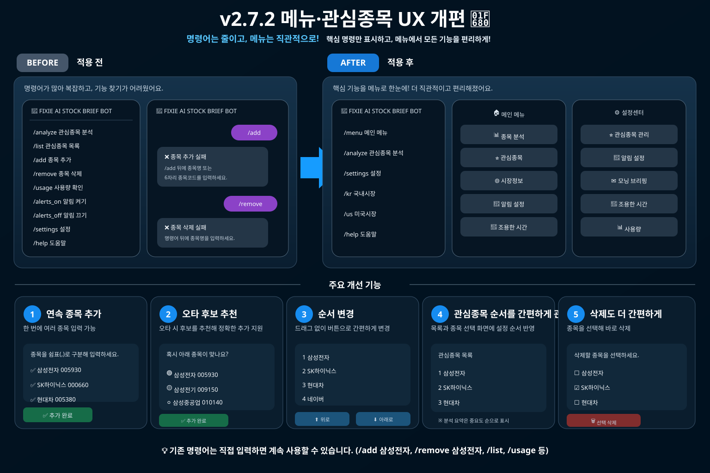

시장 흐름과 관심종목을 먼저 짧게 훑고, 필요한 종목만 버튼으로 상세 분석을 확인할 수 있도록 구성했습니다. Technical Edge·Risk·Confidence와 주요 기술지표는 Python 정량분석으로 계산하고, AI는 숫자를 반복하기보다 뉴스와 상대강도·추세의 맥락을 보조 설명합니다. 현재 Production 분석 기준은 v2.7.2입니다.
정보를 많이 쌓기보다, 먼저 볼 것과 필요할 때 열어볼 것을 나눴습니다.
/analyze에서는 관심종목 요약을 먼저 보여주고, 종목 버튼을 누르면 새 메시지를 쌓지 않고 같은 화면에서 상세분석으로 전환합니다. 현재 종목 표시와 이전·요약·다음 이동도 지원합니다.사용 중인 Production과 연구 중인 내용을 구분하면서, 실제로 체감할 수 있는 변화와 검증 계획을 함께 정리합니다.
1차 연구 후보를 사전등록된 더 넓은 KOSPI 표본에서 다시 검증합니다. 검증 전에는 Production에 적용하지 않습니다.
점수 기준은 유지하면서 앱형 메뉴·관심종목 관리, 같은 화면 종목 탐색, 이전 분석 비교, 뉴스 중복 축소와 서비스 안정성을 보강했습니다.
국내 종목의 60일 상대강도 계산과 Live OOS 추적 무결성을 보강했습니다.
실제 분석 시점의 결과를 저장하고 미래 5·20·60 거래일이 지난 뒤 성과를 확인하는 검증을 추가했습니다.
장중 15분 단위로 의미 있는 Edge·Risk·RS·Trend 변화를 확인하고 opt-in 방식으로 알립니다.
매일 아침 관심종목 상태와 이전 결과 대비 주요 변화를 자동으로 정리하는 기능을 도입했습니다.
RSI·MACD·거래량·Breakout·이동평균 구조를 기초 지표 수준에서 다시 확인했습니다.
Trend·Momentum·Relative Strength 등 구성요소와 개선 후보를 비교했습니다.
분석 상태가 달라진 종목을 중심으로 설명을 갱신해 반복 분석의 불필요한 처리를 줄였습니다.
5·20·60 거래일 성과와 여러 표본 조건을 비교할 수 있는 검증 체계를 보강했습니다.
국내·미국 시장시간, 장중 데이터 처리, 기준지수와 Edge·Risk·Confidence 구조를 정비했습니다.
국내 시장과 관심종목의 가격·기술지표·뉴스를 텔레그램으로 정리하는 기본 구조를 만들었습니다.
1차 KOSPI 연구에서 Trend와 Relative Strength의 같은 날 종목 간 상대순위를 이용한 후보가 연구 후보로 남았지만, 별도 종목 holdout에서 충분한 재현성이 확인되지 않아 Production에는 적용하지 않았습니다.
Production 점수 기준은 그대로 유지하면서, 분석 결과를 더 빠르게 탐색하고 변화와 뉴스를 덜 복잡하게 확인할 수 있도록 사용성을 보강했습니다.

/analyze에서 모든 상세정보를 한꺼번에 보여주지 않고 시장 + 관심종목 요약을 먼저 표시합니다.국내 종목의 장기 상대강도와 Live OOS 추적의 안정성을 보강했습니다.
실제 운영 시점의 분석 결과를 저장하고 미래 데이터가 쌓인 뒤 확인하는 검증 체계를 추가했습니다.
사용자가 직접 반복 분석하지 않아도 의미 있는 변화가 생겼을 때만 알림을 받을 수 있도록 자동화했습니다.
매일 아침 관심종목의 현재 상태와 이전 결과 대비 중요한 변화를 한 번에 확인할 수 있는 자동 브리핑을 추가했습니다.
RSI·MACD·거래량·돌파·이동평균 구조 등 기초 지표 수준에서 신호 방향을 다시 확인했습니다.
Trend·Momentum·Relative Strength·Participation·Setup 구성요소와 여러 개선 후보를 비교했습니다.
정량 상태가 실제로 달라진 종목을 중심으로 설명을 갱신하고 같은 상태의 반복 요청에서 불필요한 재처리를 줄였습니다.
5·20·60 거래일 이후 성과와 여러 표본 조건을 비교할 수 있도록 검증 체계를 확장했습니다.
국내·미국 시장시간과 장중 데이터 처리, 기준지수, Technical Edge·Risk·Confidence 구조를 정비했습니다.
국내 시장과 관심종목의 가격·기술지표·뉴스를 수집하고 정량 분석과 AI 설명을 결합해 텔레그램으로 전달하는 기본 구조에서 시작했습니다.
Production은 안정적으로 유지하고, 새 아이디어는 바로 점수에 넣지 않습니다.
현재는 새로운 지표를 계속 추가하기보다 이미 계산된 결과를 더 빠르게 읽을 수 있게 만들고, 뉴스·AI 설명에서 중복과 저품질 정보를 줄이는 데 집중하고 있습니다.
KOSPI 1차 연구 후보는 별도 종목 holdout에서 충분히 재현되지 않아 Production 변경은 하지 않았으며, 다음 단계는 사전등록된 확장 KOSPI universe에서 다시 검증하는 것입니다.
“백테스트가 좋아 보였다”만으로 분석 기준을 바꾸지 않기 위해 개발 검증과 실제 운영 이후 검증을 분리합니다.
분석 당시의 가격·Technical Edge·Risk·Confidence·상대강도 등 핵심 결과를 관측치로 저장한 뒤, 미래 5·20·60 거래일이 실제로 지난 시점에 성과를 붙입니다.
아직 해당 기간이 지나지 않은 관측치는 미완료 상태로 남기며, 표본이 적을 때는 적중률이나 평균수익률을 확정적인 성능으로 해석하지 않습니다.
처음이라면 아래 순서만 기억하면 됩니다.
AI STOCK BRIEF 텔레그램 봇을 열고 시작합니다.
눌러서 봇 실행 →메인 메뉴에서 📌 관심종목을 누른 뒤 ➕ 종목 추가를 선택합니다. 국내 종목명·6자리 코드와 미국 종목명·티커를 입력할 수 있습니다.
삼성전자국내 종목명000660국내 종목코드엔비디아미국 종목명NVDA미국 티커메인 메뉴에서 📊 종목 분석을 눌러 시장과 관심종목 요약을 확인합니다. 종목 버튼과 ◀ 이전 · 요약 · 다음 ▶으로 같은 메시지 안에서 상세분석을 이동할 수 있으며, 📄 전체 상세보기도 사용할 수 있습니다.
메뉴의 🔔 알림 설정에서 장중 중요 변화 알림을 직접 켤 수 있습니다. 켜지 않으면 자동 장중 알림은 오지 않습니다.
버튼 메뉴 대신 바로 입력하고 싶을 때 사용할 수 있는 선택형 단축 명령입니다.
/add 종목관심종목 추가/추가도 사용할 수 있습니다. 국내·미국 종목을 종목명 또는 코드/티커로 등록합니다.
/analyze관심종목 분석요약 화면에서 Technical Edge·신호·고위험 여부를 먼저 확인하고, 종목 버튼으로 가격·세부지표·뉴스를 같은 분석 화면에서 확인합니다.
/usage남은 분석 횟수/사용량도 동일합니다. 오늘 사용한 횟수와 남은 분석 횟수를 확인합니다.
/us미국 시장 정보미국 주요 지수와 시장 흐름을 별도로 확인합니다.
/alerts_on장중 변화 알림 켜기/알림켜기도 동일합니다.
/alerts_status알림 상태 확인/알림상태도 사용할 수 있습니다. 끄기는 /alerts_off 또는 /알림끄기입니다.
/analyze에서 이미 계산한 결과를 재사용하므로, 종목 버튼으로 이동하거나 📄 전체 상세보기를 열어도 하루 분석 횟수가 추가로 차감되지 않으며 새 시세 조회나 AI 재분석도 하지 않습니다./alerts_on 또는 /알림켜기를 입력한 경우에만 발송됩니다./usage 또는 /사용량 명령으로 오늘 남은 분석 횟수를 확인할 수 있습니다.요약 화면에서는 핵심만 보고, 종목 버튼 또는 전체 상세보기에서 아래 세부 항목을 확인할 수 있습니다.
Technical Edge는 현재 위치가 기술적으로 얼마나 우호적인지 0~100점으로 요약한 값입니다.
점수가 높다고 미래 상승확률이나 목표수익률이 그만큼 높다는 뜻은 아닙니다.
신뢰도가 60점 미만이면 점수와 관계없이 “판단 보류”로 표시합니다.
Technical Risk는 변동성, 과열도, 하락·낙폭 구조 등을 이용해 가격이 흔들릴 위험을 0~100점으로 평가합니다.
위험도가 높다고 반드시 하락한다는 뜻은 아닙니다. 강한 상승 종목도 변동성과 과열이 커지면 위험도가 높아질 수 있습니다.
Confidence는 상승확률이 아니라 현재 분석 입력을 얼마나 안정적으로 참고할 수 있는지 보여주는 품질 지표입니다.
신뢰도 100은 적중률 100%를 뜻하지 않습니다.
분석 시점의 현재가와 전일 종가 대비 등락률을 표시합니다. 국내 종목은 원, 미국 종목은 달러로 표시합니다.
현재가와 MA5·MA10·MA20의 위치를 이용해 주가 흐름의 방향과 배열 구조를 보여줍니다.
정배열은 MA5 > MA10 > MA20, 역배열은 MA5 < MA10 < MA20입니다.
최근 가격 움직임의 힘과 방향을 RSI(14)와 MACD로 확인합니다. 상세 화면에서는 MACD를 상승·중립·하락으로 단순화해 표시합니다. RSI 70 이상이 자동 매도, 30 미만이 자동 매수라는 뜻은 아닙니다.
거래량 x.xx배는 현재 일봉 거래량을 직전 20거래일의 일평균 거래량과 비교한 값입니다.
장중에는 당일 누적 거래량과 과거 하루 전체 평균을 비교하므로 해석에 주의합니다. 미완성 장중 거래량은 화면에는 표시해도 Technical Edge의 거래량 확인 점수에는 직접 반영하지 않습니다.
Relative Strength는 같은 기간 기준지수보다 종목이 얼마나 강하거나 약했는지를 %p로 보여줍니다.
예: KOSPI 대비 20일 +1.2%p라면 최근 20거래일 수익률이 KOSPI보다 1.2%포인트 높았다는 뜻입니다.
최근 수익률, 이동평균 이격, Bollinger 위치, 최근 고점·저점 위치, RSI 등을 이용해 단기 속도와 가격 이격을 0~100점으로 봅니다. 높은 과열도는 자동 매도 신호가 아닙니다.
상세 화면에서는 데이터품질과 기준시점을 따로 보여줍니다. “장중 · 거래량 누적 중”은 분석 자체가 불완전하다는 뜻이 아니라 오늘 거래량만 아직 최종 일봉이 아니라는 뜻입니다.
Technical Edge, Risk, Confidence, 돌파 상태 등을 바탕으로 어떤 관점에서 상태를 관찰할지 요약한 보조 판단 지표입니다. 매수·매도 추천이나 투자 지시가 아닙니다.
이동평균, 최근 고점·저점, 돌파 기준 가격, Bollinger 상·하단 등을 참고해 현재가와 가까운 지지·저항 후보를 표시합니다. 확정 가격이 아니라 참고 구간입니다.
✅ 강점과 ⚠️ 주의는 전체 상세보기에서 정량 상태의 긍정·위험 근거를 요약합니다. AI 설명이 현재 신호나 추세 라벨을 그대로 반복하는 경우에는 저가치 문장을 숨기고, 의미 있는 맥락이 있을 때만 보조 설명을 남깁니다.
📰 중요 소식은 종목 관련 주요 뉴스를 정리합니다. 방향 표시는 🟢 긍정, 🔴 부정, ⚪ 중립으로 표시될 수 있으며 실제 주가 반응을 보장하는 의미는 아닙니다.
블로그·동영상·홍보성 종목추천처럼 품질이 낮은 결과는 제외하고 주요 언론·공식 출처를 우선합니다. 같은 기업 이벤트를 여러 매체가 반복 보도한 경우에는 중복 노출을 줄이고 대표 기사를 중심으로 보여줍니다. 적절한 기사가 부족하면 2개를 억지로 채우지 않을 수 있습니다.
🔗 기사 보기로 관련 기사를 직접 확인할 수 있습니다. 중요한 내용은 원문과 공시를 함께 확인하는 것이 좋습니다.
AI STOCK BRIEF는 시장 데이터와 기술지표를 빠르게 정리해 사용자의 판단을 보조하는 정보 서비스입니다. 특정 종목의 상승·수익을 보장하거나 매수·매도 주문을 지시하지 않습니다. 기술신호와 전략 방향을 포함한 모든 결과는 참고용 보조지표이며 최종 투자 판단과 주문 결정은 사용자가 직접 수행해야 합니다.